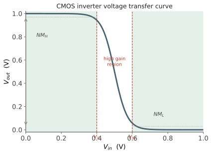

本页目录
电路 I · CMOS 反相器与数字基元
层次：本科核心。 CMOS 反相器是整个数字世界的原子。它只有两个晶体管，却包含了数字集成电路的全部核心概念：静态特性、噪声容限、延迟、功耗。理解透这一个门，其余的逻辑门、加法器、乃至处理器，都只是它的组合。
学习层：一个反相器如何把连续电压恢复成可靠的 0 和 1？
1. 具体谜题：为什么 CMOS 反相器中间很危险、两端很安静？
给一个 \(V_{DD}=1.0\ \mathrm V\) 的 CMOS 反相器。当输入 \(V_{in}=0\) 时，输出为什么能接近 \(1.0\ \mathrm V\)；当输入 \(V_{in}=1.0\ \mathrm V\) 时，为什么输出能接近 0？更关键的是，输入经过中间阈值附近时，为什么输出不是平滑地跟随，而是快速翻转？
先预测三个结果：把 PMOS 做得更宽，切换点 \(V_M\) 向电源端还是地端移动；把负载电容加倍，逻辑电平是否改变；稳态输入为 0 或 1 时，电源到地的直流电流是否应当接近零。
2. 先预测：先画电流路径，再猜电压
实验会先隐藏 VTC 与延迟数字。请先回答：
- \(V_{in}=0\) 时，哪只管提供上拉路径，哪只管把下拉路径切断？
- \(V_{in}\approx V_M\) 时，NMOS 与 PMOS 是否可能同时导通，为什么这会产生短路电流？
- 若 PMOS 强度增加，输出在同一个 \(V_{in}\) 下应更高还是更低？
- \(C_L\) 加倍时，\(V_{OH},V_{OL}\) 是否改变，\(t_{pd}\) 如何变？
3. 最小心智模型：互补网络 + 负载电容
CMOS 反相器由一个上拉网络和一个下拉网络组成。稳态时其中一条路径被切断，输出被恢复到电源轨；过渡时两条路径共同决定输出电压，负载电容则保存上一次状态并需要被充放电。
因此“数字 0/1”不是器件的原生状态，而是模拟电路通过高增益 VTC、噪声容限和再生式级联恢复出来的区间。这个心智模型不覆盖动态短路电流、串扰、IR 压降和版图寄生；它把这些作为额外预算而不是假装不存在。
4. 形式机制与不变量：VTC、噪声容限和能量
用 \(K_n=\mu_nC_{ox}(W/L)_n\)、\(K_p=\mu_pC_{ox}(W/L)_p\) 的长沟道平方律近似，输出工作点由上拉与下拉电流平衡决定：
切换点 \(V_M\) 满足 \(V_{out}=V_{in}\)，若两管都在饱和区且阈值相同，则
从 VTC 的斜率 \(-1\) 处定义 \(V_{IL},V_{IH}\)，再有 \(NM_L=V_{IL}-V_{OL}\)、\(NM_H=V_{OH}-V_{IH}\)。一次完整翻转给负载的理想动态能量约为 \(C_LV_{DD}^2\)，平均动态功耗为 \(\alpha C_LV_{DD}^2f\)，一阶延迟为 \(t_{pd}\approx C_LV_{DD}/(2I_{on})\)。可审计的不变量是轨到轨逻辑恢复、VTC 单调下降，以及在 \(I_{on}\) 与 \(V_{DD}\) 固定时 \(t_{pd}\) 与 \(C_L\) 成正比。
5. 交互实验：拖动输入，先猜后看 VTC
无 JavaScript 时的静态读法：取 \(V_{DD}=1.0\ \mathrm V\)、\(V_{th,n}=|V_{th,p}|=0.35\ \mathrm V\)、\(K_n=100\ \mu\mathrm{A/V^2}\)、\(K_p=250\ \mu\mathrm{A/V^2}\)、\(C_L=2\ \mathrm{fF}\)。在中间区用上下拉电流平衡，在两端直接读电源轨。
| \(V_{in}\) | NMOS/PMOS 状态 | 静态 \(V_{out}\) | 读法 |
|---|---|---|---|
| 0 V | 关 / 开 | 约 \(1.00\ \mathrm V\) | 上拉恢复逻辑 1 |
| \(V_M\approx0.534\ \mathrm V\) | 开 / 开 | 约 \(0.534\ \mathrm V\) | 强 PMOS 使 \(V_M\) 高于 \(V_{DD}/2\) |
| 1.0 V | 开 / 关 | 约 \(0\ \mathrm V\) | 下拉恢复逻辑 0 |
由 \((V_M-0.35)=\sqrt{2.5}(1-V_M-0.35)\) 得 \(V_M\approx0.534\ \mathrm V\)。若 \(I_{on}\approx21.1\ \mu\mathrm A\)，\(C_L=2\ \mathrm{fF}\) 时 \(t_{pd}\approx47\ \mathrm{ps}\)；把 \(C_L\) 加倍，静态 VTC 近似不变而延迟近似加倍。脚本会绘制 VTC、当前工作点、\(V_M,V_{IL},V_{IH}\)、噪声容限、上升/下降延迟和一次翻转能量。
6. 反例与失效边界：逻辑抽象在哪些地方漏风？
- “CMOS 没有静态功耗”只在稳态、理想绝缘和忽略漏电时成立；短路、亚阈值、栅隧穿与结漏电都会收费。
- “切换点永远是 \(V_{DD}/2\)”只对强度匹配和阈值对称成立；PMOS/NMOS 迁移率差异、体效应和失配会移动它。
- “VTC 越陡就所有指标越好”忽略噪声、功耗、输入电容和延迟；增强驱动往往也增加面积与负载。
- “负载只影响速度”忽略大负载下的转换时间、短路功耗和串扰，真实单元表征必须把负载与输入斜率一起纳入。
7. 迁移题：从一个 INV 选择一条标准单元路径
在 NAND 与 NOR 之间做选择时，先把下拉网络的串并联关系写出，再用 \(\mu_n\approx3\mu_p\)、堆叠体效应和负载电容估算哪一个更慢。若要求 \(NM_H\) 与 \(NM_L\) 对称，你会优先调 PMOS 宽度、阈值还是供电？说明每个旋钮改变的是 VTC、延迟还是功耗。
一、为什么是互补结构
CMOS = Complementary MOS：把 PMOS 接在电源与输出之间（上拉网络），NMOS 接在输出与地之间（下拉网络），二者的栅极接同一输入。
- 输入低 → PMOS 导通、NMOS 截止 → 输出被拉到 \(V_{DD}\)；
- 输入高 → NMOS 导通、PMOS 截止 → 输出被拉到地。
关键性质：稳态时上下管从不同时导通，因此没有从电源到地的直流通路。 静态功耗理论上只剩漏电。
这一点的历史意义怎么强调都不过分。早期的 NMOS 逻辑用电阻做上拉，输出为低时电源到地始终有电流——静态功耗正比于门的数量，这使大规模集成不可能。CMOS 把静态功耗降到几乎为零，才让"在一块芯片上放几十亿个门"成为可以想象的事。
代价：需要两倍的晶体管，以及 n 阱/p 阱工艺（更复杂，且带来第二页说的闩锁风险）。行业毫不犹豫地付了这个代价——这是权衡思维的经典范例。
二、静态特性：电压传输曲线
把输入从 0 扫到 \(V_{DD}\)，画出输出，得到 VTC（电压传输特性）。

为什么陡峭如此重要：过渡区的高增益意味着输入的小扰动被压缩、输出被推向轨。这就是数字信号能一级级传下去而不累积噪声的原因。数字电路本质上是一群被强行工作在高增益区的模拟放大器——它的"离散"是被恢复出来的，不是天生的。
对称设计：若希望阈值点 \(V_M\) 落在 \(V_{DD}/2\)，需要上下管驱动能力匹配。由于 \(\mu_n \approx 3\mu_p\)（第一页），须令
这个比例直接决定了标准单元的版图形状——你看到的所有标准单元库，PMOS 区域都明显宽于 NMOS 区域。
三、延迟：CMOS 里的时间从哪来
反相器的延迟本质上是给负载电容充放电的时间：
负载电容 \(C_L\) 由三部分组成：下一级的栅电容 + 本级的源漏结电容 + 互连线电容。
几个关键工程结论：
① 扇出与驱动能力：延迟正比于扇出（驱动多少个门）、反比于自身尺寸。定义逻辑努力（logical effort）方法，可以系统地为路径上每一级选尺寸。结论：级联缓冲器的最优放大倍数约为 \(e \approx 2.7\)（实际常用 3–4）——这是一个漂亮的、可以求导得出的优化结果。
② 互连开始主导：先进节点中，导线电阻与电容的贡献已经超过晶体管本身。导线越细，电阻越大（且有电子表面散射效应使电阻率进一步上升），这带来了 \(RC\) 延迟随缩放恶化的问题。"缩放让一切变快"在互连上从来不成立——这是引入低κ介质、铜互连（乃至钌等新材料研究）的动机。
③ 电压与速度：\(I_{on}\) 大致随 \((V_{DD}-V_{th})\) 增长，所以降压会显著变慢。DVFS（动态调压调频）正是利用这条曲线，在性能与功耗间实时权衡（承第四页）。
四、功耗：第四页的公式落到门上
- \(\alpha\)（活动因子）：一个门平均多少个时钟周期翻转一次。典型逻辑约 0.1，时钟网络则接近 1——所以时钟树往往是全芯片最耗电的单一网络，时钟门控（clock gating）因而是最有效的低功耗手段之一；
- \(V_{DD}^2\)：最有力的旋钮，但受第四页的限制；
- 漏电：先进节点占比显著，且随温度指数上升。
能量-延迟权衡：把 \(V_{DD}\) 作为参数，可以画出能量与延迟的权衡曲线。存在一个"最小能量点"，通常在近阈值甚至亚阈值区——但那里速度极慢且对变异极敏感。超低功耗设计（IoT、可穿戴）就工作在这个区域，而高性能设计则选择远离它。这是"没有最优只有权衡"的又一实例。
五、从反相器到逻辑门
通用构造法则：
- 下拉网络（NMOS）实现逻辑函数的非形式：串联 = AND，并联 = OR；
- 上拉网络（PMOS）是下拉网络的对偶：串联↔并联。
于是 NAND = NMOS 串联 + PMOS 并联；NOR = NMOS 并联 + PMOS 串联。
工程上的重要偏好：NAND 优于 NOR。 原因是 NOR 需要 PMOS 串联，而 PMOS 本就慢（迁移率低），串联后更慢，为补偿需把宽度做得很大 → 面积与电容双双恶化。所以标准单元库以 NAND 为骨干，综合工具也偏好把逻辑映射成 NAND 形式——一个源自第一页"空穴迁移率低"的、贯穿到 EDA 工具的连锁后果。
堆叠的其他代价：串联管还受体效应（第三页）影响，上层管的 \(V_{th}\) 被抬高。所以逻辑门的输入数一般不超过 4，更复杂的函数用多级实现。
六、标准单元：数字设计的抽象层
标准单元（standard cell）是把常用门（INV、NAND、NOR、触发器、加法器等）预先设计好版图、表征好时序与功耗，形成单元库。所有单元具有统一的高度（便于按行排列、共享电源轨），宽度按复杂度变化。
这是一个关键的抽象层（承导论 §3）：
- 数字设计者写 RTL，综合工具映射到单元库，布局布线工具摆放它们——全程不必接触晶体管；
- 单元库的表征数据（不同负载与转换时间下的延迟、功耗）是上层工具赖以工作的模型；
- 抽象会漏：噪声、串扰、IR 压降、老化都不在简单的单元模型里，需要额外的分析流程去补（第七、十四页）。
单元高度（以金属轨数计）是节点密度的关键指标之一——近年的密度提升，很大一部分来自单元高度的降低（DTCO，第五页），而非单纯的晶体管缩小。
下一页：有了逻辑门，还需要让它们在时间上协同。时序、触发器、时钟，以及那个决定芯片能跑多快的分析——静态时序分析。